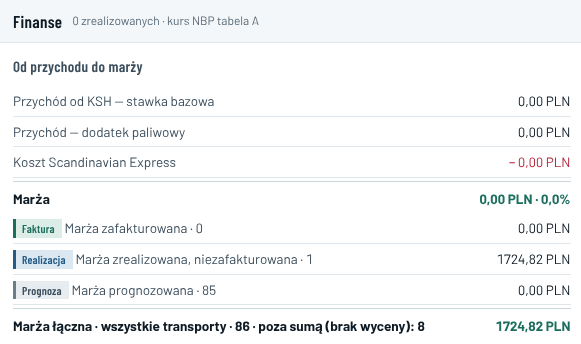
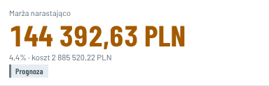
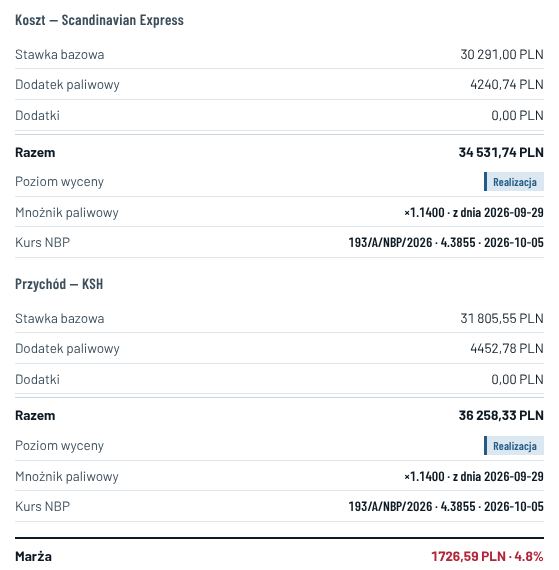

E16 · Finanse: jedna marża, EUR, kurs NBP, widok każdej firmy · komputer i telefon
„Dziś” — zrzuty aplikacji 07.10, 22:3x (konto Operacje HHL) · „po zmianie” — liczby z bazy 07.10 · po decyzjach 23:12: próg marży w Opcjach (B), kurs bieżący przed rozładunkiem (A)zdecydowane 07.10, 23:12
Dziś: ta sama marża w sześciu wersjach
Finanse0,00 PLN i 1724,82 PLN

Górna część liczy tylko transporty ze statusem „DELIVERED”, a takiego nie ma żaden — stąd 0,00. „Marża prognozowana · 85” = 0,00 PLN, bo 85 transportów nie ma jeszcze kursu NBP. Tekst „Bez zatwierdzonych parametrów i odczytów — brak dopłaty” jest nieaktualny: dopłata jest liczona (×1,13 i ×1,14).
Kokpit144 392,63 PLN · 4,4%

Kwota = marża w EUR × stały kurs 4,39 z 24.09 (kurs demonstracyjny z makiety). 4,4% to średnia procentów z 94 transportów, w tym 8 bez ceny liczonych jako 0. Z bazy: 4,77% przychodu.
Waluta: PLN zamiast EUR
Konta z zapisaną walutą2 z 15 (EUR)
Pozostałe 13 kontPLN
Domyślnie w bazieEUR
Domyślnie w aplikacjiPLN
Ustalenie z 24.09: EUR wszędzie, PLN tylko po przełączeniu przez użytkownika. Konto testowe nie ma zapisanej waluty, więc widzi PLN.
Panel SG-01 › Cenydwa kursy w jednym oknie

Kwoty przeliczone stałym kursem 4,39, a wiersz „Kurs NBP” pokazuje prawdziwy kurs SG-01: 193/A z 05.10, 4,3855. Marża tu 1726,59 PLN, w Finansach 1724,82 PLN. Kolor czerwony, bo kod ma próg 18%. Zapis „×1.1400”, „4.3855”, „4.8%” z kropką.
Jedna marża, sześć liczbten sam stan bazy, 07.10
| Miejsce | Pokazuje | Skąd |
|---|
| Baza (86 transportów z ceną) | 32 891,26 EUR · 4,77% | przychód 690 185,16 − koszt 657 293,90 EUR |
| Kokpit | 144 392,63 PLN · 4,4% | kurs stały 4,39; średnia procentów z 94 |
| Finanse › Marża | 0,00 PLN · 0,0% | tylko status „DELIVERED” — 0 transportów |
| Finanse › Marża łączna | 1724,82 PLN | tylko SG-01 (kurs NBP); prognoza 85 = 0 |
| Finanse › według rodzaju | 4,8% na czerwono | próg 18% w tabeli, 12% na liście (wszystkie 86 na liście) |
| Panel SG-01 › Ceny | 1726,59 PLN | kurs 4,39 obok wiersza z kursem 4,3855 |
Kurs NBP pobierany jest poprawnie: zadanie 2× dziennie (12:30 i 16:30), ostatnia tabela 195/A z 07.10 = 4,3797. SG-01 (rozładunek 06.10) ma kurs 193/A z 05.10 = 4,3855 — zgodnie z regułą „dzień roboczy przed rozładunkiem”. Kursu z bazy nie używa żaden ekran z kwotami.
Po zmianie · HHL (Administrator i Operacje) · komputer
Finanseprojekt Stegra Boden · 94 transporty: 86 z ceną, 8 bez ceny (KR-08 – KR-15, brak daty)EUR · zmiana w Moje konto
Od przychodu do marży
| Etap rozliczenia | Transporty | Przychód (KSH) | Koszt (SCX) | Marża | % |
|---|
| Zafakturowane obie faktury (E25) | 0 | 0,00 | 0,00 | 0,00 | — |
| Dostarczone do zafakturowania | 1 | 8 259,30 | 7 866,00 | 393,30 | 4,76% |
| Prognoza przed dostawą | 85 | 681 925,86 | 649 427,90 | 32 497,96 | 4,77% |
| Razem (EUR) | 86 | 690 185,16 | 657 293,90 | 32 891,26 | 4,77% |
Marża % = marża ÷ przychód. Te same liczby w Kokpicie, w Harmonogramie i w panelu każdego transportu — jedno źródło: ceny transportów w bazie. „Dostarczone” liczy statusy od „Dostarczone” (E25), kwota z faktury zastępuje wyliczenie (ustalenie 24.09).
Marża według rodzaju elementu
| Rodzaj | Z ceną / wszystkie | Przychód | Koszt | Marża | % |
|---|
| Słupy główne | 30 / 30 | 246 185,10 | 234 462,00 | 11 723,10 | 4,76% |
| Belki suwnicowe | 27 / 27 | 170 655,99 | 162 516,60 | 8 139,39 | 4,77% |
| Kratownice | 6 / 14 | 89 651,94 | 85 382,80 | 4 269,14 | 4,76% |
| Płatwie dachowe i stężenia | 9 / 9 | 73 722,33 | 70 206,90 | 3 515,43 | 4,77% |
| Słupy skrajne oś A | 5 / 5 | 47 166,20 | 44 917,50 | 2 248,70 | 4,77% |
| Tężniki | 6 / 6 | 39 344,80 | 37 468,00 | 1 876,80 | 4,77% |
| Tężniki ściany A | 3 / 3 | 23 458,80 | 22 340,10 | 1 118,70 | 4,77% |
Kurs NBP (tabela A)
- Ostatnia tabela
- 195/A/NBP/2026 z 07.10.2026 · 1 EUR = 4,3797 PLN
- Pobieranie
- 2× dziennie, 12:30 i 16:30
- Dostarczony
- kurs z dnia roboczego przed rozładunkiem, na stałe przy transporcie (np. SG-01: rozładunek 06.10 → 193/A z 05.10, 4,3855)
- Przed rozładunkiem
- kurs bieżący (ostatnia tabela), z dopiskiem „kurs bieżący” (decyzja 23:12)
PLN tylko po przełączeniu w Moje konto. Kurs stały 4,39 znika z aplikacji.
Flaga marżydecyzja 23:12 · próg w Opcjach
Próg marży (Opcje › Cennik i opłaty)nie ustawiony
Transporty poniżej progu— (flaga wyłączona)
Jeden próg dla listy i koloru (dziś w kodzie 12% i 18%). Ustawia i zmienia tylko Administrator HHL, z wpisem w Historii zmian. Do czasu wpisania progu flaga jest wyłączona. Wszystkie 86 transportów ma dziś 4,76–4,77%.
Opłata paliwowa
Tydzień obowiązywania i tydzień wskaźników — ekran „Opłata paliwowa” (E39). Nieaktualny tekst „brak dopłaty” usunięty.
Kokpit · Marża projektu
32 891,26 EUR
4,77% przychodu · 86 z ceną: 1 dostarczony, 85 prognoza · 8 bez ceny
Po zmianie · panel transportu › Ceny
SG-01 › CenyEUR (domyślnie)
Koszt — Scandinavian Express
Stawka bazowa6 900,00 EUR
Opłata paliwowa ×1,14966,00 EUR
Dopłaty0,00 EUR
Razem7 866,00 EUR
Przychód — KSH
Stawka bazowa7 245,00 EUR
Opłata paliwowa ×1,141 014,30 EUR
Dopłaty0,00 EUR
Razem8 259,30 EUR
Marża393,30 EUR · 4,76%
EtapDostarczone
Kurs NBP193/A/NBP/2026 · 4,3855 · 05.10.2026
Kurs z dnia roboczego przed rozładunkiem (06.10). Kolor marży tylko przy fladze.
SG-01 › CenyPLN (wybór w Moje konto)
Koszt — Scandinavian Express
Stawka bazowa30 259,95 PLN
Opłata paliwowa ×1,144 236,39 PLN
Dopłaty0,00 PLN
Razem34 496,34 PLN
Przychód — KSH
Stawka bazowa31 772,95 PLN
Opłata paliwowa ×1,144 448,21 PLN
Dopłaty0,00 PLN
Razem36 221,16 PLN
Marża1 724,82 PLN · 4,76%
Przeliczone kursem193/A/NBP/2026 · 4,3855 · 05.10.2026
Ta sama liczba w Finansach (1 724,82). Kwoty źródłowe zostają w EUR.
SG-15 › CenyPLNkurs bieżący · 23:12
Załadunek 08.10, plan dostawy 14.10 — jeszcze bez rozładunku.
Koszt razem34 148,52 PLN
Przychód razem35 855,95 PLN
Marża1 707,43 PLN · 4,76%
EtapPrognoza
Przeliczone kursem195/A/NBP/2026 · 4,3797 · 07.10.2026 kurs bieżący
Po rozładunku kurs zmienia się na tabelę z dnia roboczego przed rozładunkiem i zostaje na stałe. W EUR: koszt 7 797,00, przychód 8 186,85, marża 389,85.
Po zmianie · KSH i SCX widzą tylko swoją stronę
RozliczeniaKSH Użytkownik · Twoja cena
| Etap | Transporty | Do zapłaty (EUR) |
|---|
| Zafakturowane | 0 | 0,00 |
| Dostarczone, przed fakturą | 1 | 8 259,30 |
| Prognoza | 85 | 681 925,86 |
| Razem | 86 | 690 185,16 |
Bez kosztu SCX i bez marży. Dziś „Do zapłaty narastająco” = 0,00, bo liczy tylko status „DELIVERED”.
Moje stawkiSCX Dyspozytor i SCX Użytkownik
| Etap | Transporty | Należność (EUR) |
|---|
| Zafakturowane | 0 | 0,00 |
| Dostarczone, do faktury | 1 | 7 866,00 |
| Prognoza | 85 | 649 427,90 |
| Razem | 86 | 657 293,90 |
Bez ceny KSH i bez marży. SCX Użytkownik widzi to samo co Dyspozytor — dziś baza pokazuje mu 0 (E9).
FinanseEUR
86 z ceną · 8 bez ceny
Marża razem4,77%
32 891,26 EUR
przychód 690 185,16 · koszt 657 293,90
Dostarczone 14,76%
Marża393,30 EUR
Przychód / koszt8 259,30 / 7 866,00
Prognoza 854,77%
Marża32 497,96 EUR
Przychód / koszt681 925,86 / 649 427,90
Kurs NBP
195/A z 07.10 · 4,3797 · dostarczone: kurs przed rozładunkiem
Rodzaje elementów — karty niżej (przewijanie).
KokpitHarmonogramRyzykaDokumentyWięcej